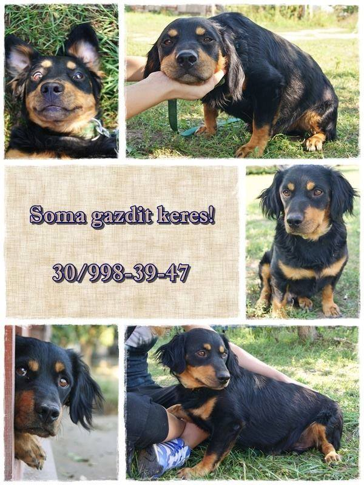

AZ ÖRÖKBEFOGADÁS MENETE
Hogyan fogadhatsz örökbe kutyát a Spánielmentéstől?

Támogassa a Cocker Rocker Spániel Fajtamentő Egyesületet – Adjunk új esélyt a spánieleknek!
Hogyan fogadhatsz örökbe kutyát a Spánielmentéstől?

Név: Soma
Nem: Kan
Született: 2013.01.01.
Bekerült: 2016.04.16.
Virtuális örökbefogadás: Jelenleg nincs virtuális támogatója
Támogatni szeretném!
GAZDIT KERES EGY RITKA KINCS - SOMA!
Soma 2013-as születésű igazi kis energiabomba.
Igazi macho csávó, aki ugatással próbálja fitogtatni erejét, de természetesen elolvad a simogatástól, és nagyon élvezi, ha Ő lehet a középpontban.
Ha létezne mini rottweiler, Sománk lenne a mintapéldány,hiszen imád tanulni, figyelmes, de persze mindig tettre kész.
Egy igazi jellem keresi álmai otthonát, ahol biztonságban érezheti Magát, cserébe Ő lehet a család kicsi testőre.
Hívd bátran a 06 30 998 3947-es telefonszámot, hogy megismerkedhess ezzel a ritka kinccsel.